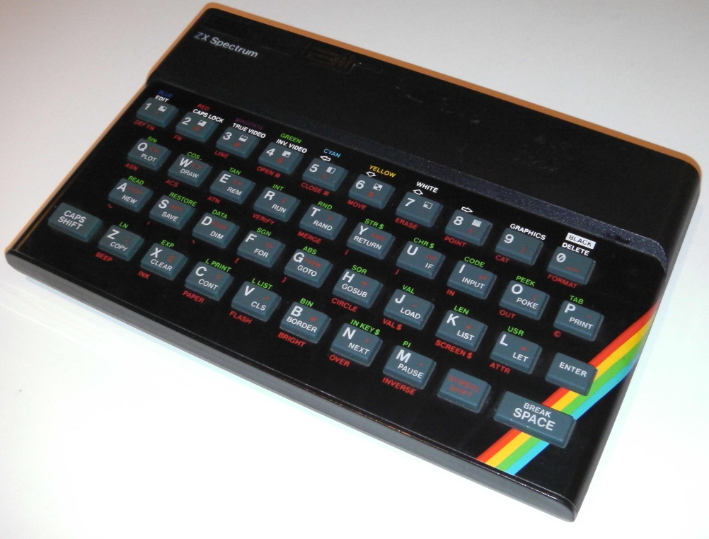

Ceglédi SZC Közgazdasági és Informatikai Technikum
Sinclair Spectrum ZX
A Sinclair ZX Spectrum személyi számítógép volt, melyet 1982-ben bocsátott ki a Sinclair Research az Egyesült Királyságban. Mikroprocesszora, a Zilog Z80-as 3,50 MHz-en futott. Az eredeti Spectrum 16 KB vagy 48 KB memóriával (RAM) rendelkezett (a bővítéshez rendelkezésre állt kiegészítő). A gép hardverét Richard Altwasser tervezte, a szoftvert pedig Steve Vickers, aki a Sinclair BASIC-et kifejlesztő Nine Tiles Ltd-nél dolgozott. A gép formáját Rick Dickinson alkotta meg. A számítógépet eredetileg a ZX80 és ZX81 család elnevezését követve ZX82-nem kívánjuk hívni, a Sir Clive Sinclair – a gép színes képességeit hangsúlyozandó – a Spectrum nevet választotta.
 Kijelzőként a tévét lehetett használni. Gumibillentyű In a Sinclair BASIC-kulcsszavai voltak, a gépelés könnyítése érdekében gyorsbillentyű ként működve: a G billentyűt lenyomva például – programozási üzemmódban – a GOTO (menj) BASIC-utasítás jelent meg a képernyőn. A programokat és adatokat hagyományos audio kazettán lehetett tárolni. (Egy mai COD4 betöltése kb. 480 napig tartana, és kb. 7670db 90 perces kazettára férne rá.)
Kijelzőként a tévét lehetett használni. Gumibillentyű In a Sinclair BASIC-kulcsszavai voltak, a gépelés könnyítése érdekében gyorsbillentyű ként működve: a G billentyűt lenyomva például – programozási üzemmódban – a GOTO (menj) BASIC-utasítás jelent meg a képernyőn. A programokat és adatokat hagyományos audio kazettán lehetett tárolni. (Egy mai COD4 betöltése kb. 480 napig tartana, és kb. 7670db 90 perces kazettára férne rá.)
A Spectrum video megjelenítési képességei megfelelőek voltak a saját idejében, bár mai szemmel nézve a felbontás igen kezdetleges nek tűnhet. Karakteres módban 32 oszlopban 24 sor volt látható, 8 színből lehetett választani, amelyeknek normál és fényes (bright) üzemmódjuk volt, így összesen 15 árnyalat állt rendelkezésre (a fekete fényes árnyalata is fekete). Grafikus üzemmódban 256 × 192 pixeles felbontása volt, ugyanannyi színnel, mint karakteres módban. A Spectrum igen sajátos módon, egy 32 × 24-es négyzethálóban kezelte a színeket, külön a szövegtől vagy a grafikai adatoktól, de ugyanakkor egy karakter cellában továbbra is csak két színt lehetett megjeleníteni, amitől egyes játékoknál furcsa színátfolyásokat lehetett megfigyelni.
A Spectrum volt az első népszerűbb személyi számítógép az Egyesült Királyságban, hasonló jelentőségű, mint a Commodore 64 az Amerikai Egyesült Államokban (a C64 volt a fő riválisa a Spectrumnak Angliában is). Továbbfejlesztett változata jobb hanggal és grafikai képességekkel TS2068 néven jelent meg az USA-ban a Timex cég gyártásában.
A Spectrum családhoz több mint 20 000 programot lehetett használni. A gép hardver korlátai ellenére a szoftver választék meglehetősen széles körű volt – léteztek fordítóprogramok, szövegszerkesztők, adatbáziskezelők, rajzprogramok és természetesen játékok.
A Spectrumnak a mai napig is széles körben vannak rajongói. Mivel a gép viszonylag olcsó és könnyen programozható volt, a mai kor sok programozója és technológia iránti rajongója a Spectrummal kezdte, ezért még most is nosztalgiával emlékezik vissza a „régi szép időkre”. A Spectrum hardver korlátai különleges kreativitást követeltek meg a játékoktól, ezért egyes Spectrum-játékok még a mai világban is élvezhetőek.

Források:
https://www.designweek.co.uk/issues/december-2014/spectrum-inventor-sir-clive-sinclair-launches-new-low-cost-games-console/
https://hu.wikipedia.org/wiki/Sinclair_Spectrum
Készítette: Túri Ádám 10.c